-
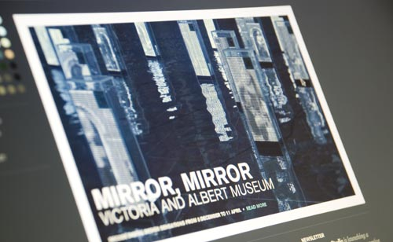
Jason Bruges Studio
Jason Bruges Studio create interactive installations that combine the worlds of site-specific art, architecture and interaction design. We were commissioned to develop a website to champion their diverse work.
To mirror the nature of their work we integrated a camera stream from their studio which is downsampled and converted into the logo to create a living iteration of their brand.
www.jasonbruges.com -
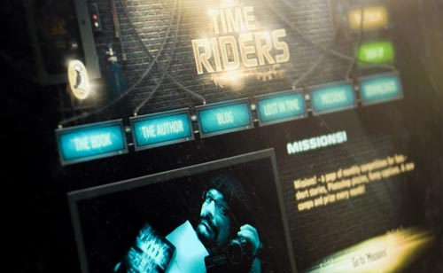
Time Riders
The first in a news series of adventure books from Alex Scarrow, we were commissioned by Puffin to create something special to launch the series.
Alongside the fully functional website, we also designed and developed "Lost in Time", a 3D puzzle game.
www.time-riders.co.uk -
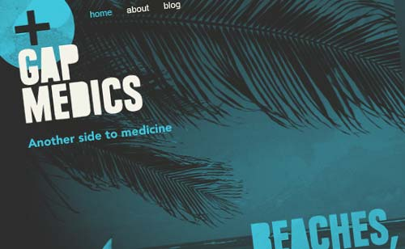
Gap Medics
A new venture from Work The World, Gap Medics organise work placements for 16-18 year old students looking for real world medical experience before pursuing further education.
We won a 5 way pitch to create the brand, website and advertising.
www.gapmedics.com -
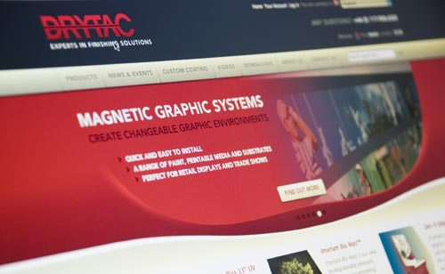
Drytac
Drytac are a leading manufacturer and supplier of products for graphic finishing from machinery through to consumables.
We were commissioned to consolidate their brand and re-develop their e-commerce solution across 3 business territories, Europe, USA and Canada.
www.drytac.com -
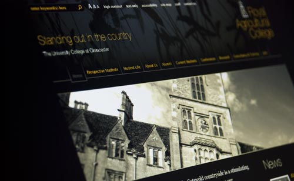
Royal Agricultural College
The RAC is a renowned agribusiness college near Cirencester.
As part of a complete rebranding process we were commissioned to re-architecture and re-design the site with the aim of increasing the open day bookings and reflecting the new branding.
www.rac.ac.uk -
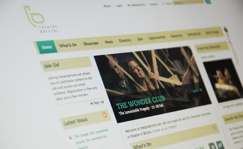
Theatre Network
A network of 4 sites supporting the theatre community across the South West. The network is largely community driven, members can post to all content streams. The sites are linked via a cross site search enabling users to search content across all the sites.
www.theatrebristol.net, www.theatreworks.org.uk, www.theatregloucestershire.net, www.danceandtheatrecornwall.net -
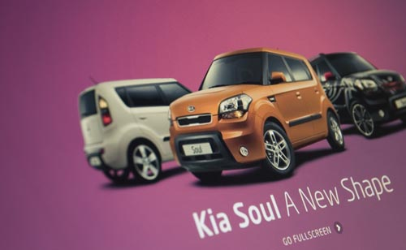
Kia Soul
Our good friends at E3 drafted us in to concept, design and develop this experiential microsite for the Kia Soul.
The national campaign focussed on the Soul being 'A New Shape' so we wondered... what if the Soul took over your computer and everything became a new shape?
www.kia.co.uk/soul -
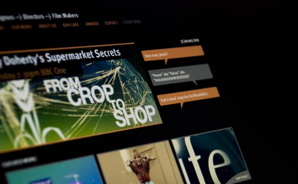
BDH
If you watch BBC2 then you're seeing BDH's work almost everyday, they're responsible for most of the branding and graphics of the BBC's flagship series' - Planet Earth, History of Now, Life - the list goes on and on.
Our first ever client and still here today, we designed and developed this portfolio-centric site, complete with a custom video platform.
www.bdh.net -
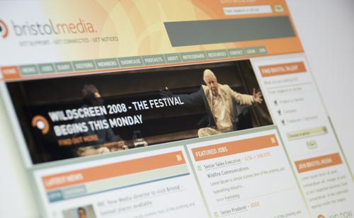
Bristol Media
A support network for our local creative media industries, we've worked with Bristol Media for 3 years designing and developing their website with jobs, news, events, features, resources - it's just about got it all.
At it's heart though is the member directory, over 1500 company and freelance profiles creating one of the largest business community sites in the UK.
www.bristolmedia.co.uk -
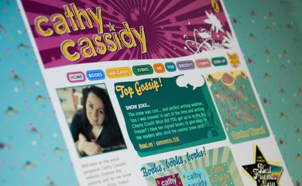
Cathy Cassidy
One of the most successful authors in the country, Cathy is very active towards here fanbase - visiting schools and organising events up and down the country.
We wanted to tap into that energy so we produced a community focussed site allowing Cathy and her fans to interact more directly. It still amazes us just how much stuff is posted day in day out.
www.cathycassidy.com -
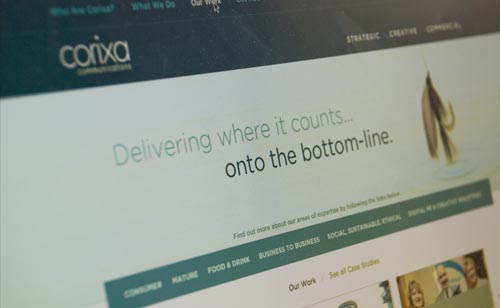
Corixa
Corixa are one of Bristol's leading PR agencies. They approached us to help them develop a strategy for better utilising the web in terms of social media and content publishing.
Their bespoke site is focussed around promoting their services whilst tapping into their avid Tweeting and blogging and bringing it all under the Corixa banner.
www.corixa.co.uk -
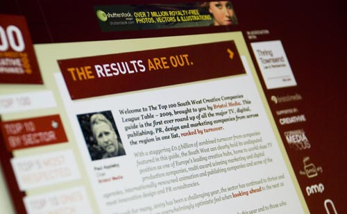
South West Top 100
The first league table of it's kind for the South West, the prospect of a Top 100 Creative Companies heralded much excitement in the region.
We were delighted to be brought in to brand the whole affair as well as develop the data capture system for entry which automatically processed entries and produced the final results.
www.swtop100.co.uk -
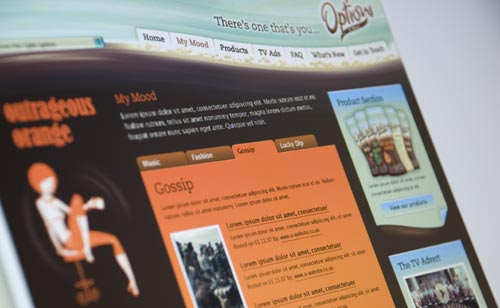
Options
Needing some creative muscle, our friends at The Real Adventure called us up to bring life to the Options brand online.
The angle was that whatever your mood there was a flavour for you. With this in mind we created characters for each flavour and brought them together in the 'Options Café'.
www.optionstreats.co.uk -
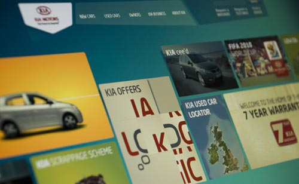
Kia Motors
E3 needed a dose of technical Flash magic to help them realise their concept for Kia Motors. We were more than happy to help, building some nifty code to create the Kia Wall.
Behind the scenes the framework is totally scalable and easily updatable allowing Kia to run multiple promotions throughout the year.
www.kia.co.uk
-
"Enthusiastic and flexible, Beef helped us realise our aims beyond expectation."
Mike Bennett, CEO, Bristol Media -
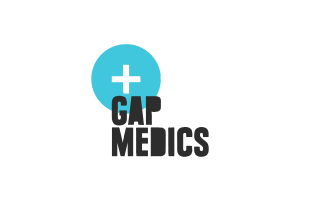
"Your work is great. What you have produced really communicates with the people that we are trying to reach."
Omar Mohamed, Director, Gap Medics -
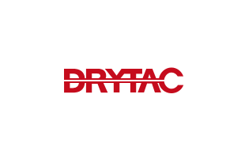
"Beef delivered a sophisticated solution to our e-commerce challenge and feedback from across the business is that the new site is making a real difference to how we work."
Clare Mooney, Marketing Executive, Drytac -
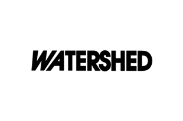
"Beef are a great team to work with. They took into account our needs and ideas throughout, and maintained a fresh, creative and flexible approach."
Gill Hayworth, Watershed Media Centre -
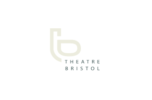
"Beef's imaginative problem solving and highly collaborative working style have brought fresh perspectives to new and existing design problems and delivered a high quality, bespoke solution."
Tom Davies, Theatre Network -
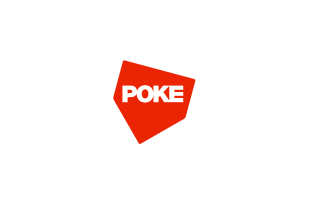
Quick, friendly and brilliant.
Iain Tait, Poke -
Their name may be bonkers but Beef have real creative muscle. Join them on a journey, it’ll pay dividends.
John Durrant, Design Director, BDH -
"Your creative is just genius, everything looks fantastic."
Alex Kett, Art Director, The Real Adventure -
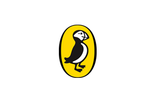
"i think your websyte is the funkyiest authours websyte ever!
Louise, Cathy Cassidy Fan